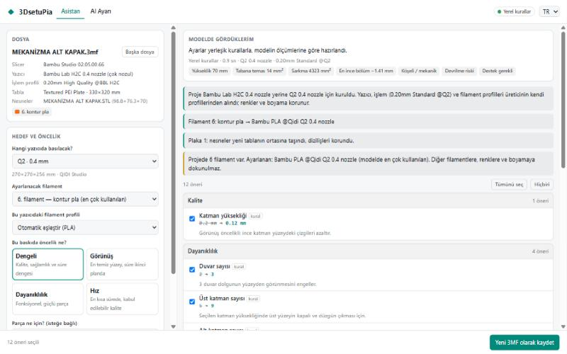

3MF'i bırak: 3DsetuPia modeli ölçer, yazıcını ve filamentini okur, onlarca ayarı nedenleriyle önerir. Seçtiklerini yeni bir 3MF'e yazar. Başka yazıcı için hazırlanmış dosyayı da senin yazıcına taşır.
Drop a 3MF: 3DsetuPia measures the model, reads your printer and filament, and suggests dozens of settings with reasons. Your picks go into a new 3MF. It can also move a project made for another printer to yours.

Kalite, Dayanıklılık, Hız, Destek ve Filament sekmelerindeki ayarları senin modeline göre hazırlar.
It prepares Quality, Strength, Speed, Support and Filament settings for your model.
Sarkma alanı, tabana temas, duvar kalınlığı, devrilme riski, düz yüzeyler. Bilgisayarında, internetsiz.
Overhangs, bed contact, wall thickness, tipping risk, flat tops. On your PC, offline.
Yazıcı, nozul, tabla ve filamentler dosyadan okunur. Çift nozullu yazıcılarda doğru nozulu seçer.
Printer, nozzle, plate and filaments are read from the file, even on multi-nozzle printers.
Her öneri nedeniyle listelenir. İstemediğinin işaretini kaldırırsın; asıl dosyana hiç dokunulmaz.
Every suggestion comes with a reason. Untick what you don't want; your original file is never touched.
Üreticinin kendi profilleriyle kurar, filamentleri eşleştirir, nesneleri yeni tablanın ortasına koyar.
Uses the maker's own profiles, matches filaments and centres the objects on the new bed.
Yerleşik kurallarla ücretsiz çalışır. İstersen Claude, OpenAI, Gemini ya da bilgisayarındaki Ollama.
Works free with built-in rules, or with Claude, OpenAI, Gemini or a local Ollama.
Yalnızca izinli ayarlar, güvenli aralıklar. Renklere, boyamaya ve G-code'a asla dokunmaz.
Whitelisted settings and safe ranges only. Never touches colours, painting or G-code.
Bir dakikadan kısa sürer.
Takes less than a minute.
Slicer'da kaydettiğin 3MF, indirdiğin bir proje ya da STL.
A 3MF you saved, a downloaded project or an STL.
Dengeli, Görünüş, Dayanıklılık ya da Hız.
Balanced, Looks, Strength or Speed.
Sekme sekme, nedenleriyle.
Page by page, with reasons.
Yeni 3MF tek tıkla slicer'ında açılır.
The new 3MF opens in your slicer with one click.
Program kod imzası taşımadığı için SmartScreen uyarır. "Ek bilgi → Yine de çalıştır" deyin. Kaynak kodun tamamı GitHub'da açık; dosyanın SHA-256 değeri sürüm sayfasında yazıyor.
The program is not code-signed, so SmartScreen warns. Choose "More info → Run anyway". All source code is on GitHub; the SHA-256 of the file is on the release page.
Bilgisayarda Bambu Studio, QIDI Studio veya OrcaSlicer'dan biri kurulu olmalı; yazıcı listesi ve profiller oradan okunur. PrusaSlicer ve Cura projeleri henüz desteklenmiyor.
One of Bambu Studio, QIDI Studio or OrcaSlicer must be installed; printers and profiles come from it. PrusaSlicer and Cura projects are not supported yet.
Hayır, tamamen ücretsiz ve açık kaynak. Yapay zekâ kullanmak istersen sağlayıcının kendi ücreti olabilir; yerleşik kurallar ve Ollama ücretsizdir.
No, it is free and open source. AI providers may charge for their API; built-in rules and Ollama are free.
Bu yazıcıların projelerinde ayar yapmak tam çalışır. Başka bir yazıcının projesini bunlara dönüştürmek şimdilik Bambu Studio'da yapılmalı.
Tuning their projects works fully. Converting another printer's project to them is done in Bambu Studio for now.